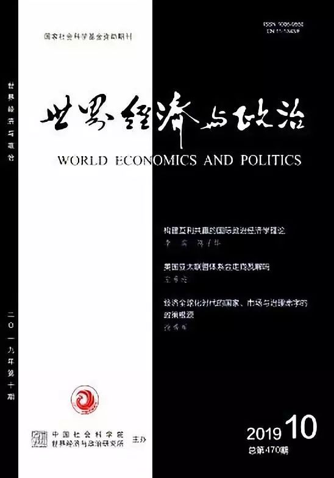

收录于合集

作品简介
【作者】 叶成城，上海社会科学院国际问题研究所，助理研究员；唐世平，复旦大学特聘教授、国际关系与公共事务学院陈树渠讲席教授，教育部“长江学者”特聘教授。
【 来源 】 《世界经济与政治》2019年第10期

内容提要
对于因果机制的重视是社会科学方法最为重要的革命之一，近年来案例研究越发强调因果机制在因果解释中的作用。然而，迄今多数研究的案例选择方法却仍然是基于因素的，这就造成了案例选择和案例研究方法之间的脱节。因此，对于案例研究而言，给出一个全新的基于因果机制的案例选择方法是迫切和必要的。我们的方法一方面融合了模糊集的思想，通过选择那些“进行到一半”的机制，减少二分虚拟变量的信息损失;另一方面，借鉴了过程追踪和控制比较的方法，通过比较因果过程观察值，最大限度地实现“准实验状态”。具体而言，其基本操作思路是在特定时空情境下，选择机制相同而结果不同的案例，通过对比完整展现机制的案例和机制被抑制而中止的案例，实现“发现或检验机制”的目标。通过两本著作的比较可以发现，上述方法存在如下的优势:能够更加精确地考察案例、变量以及机制之间的关系，兼顾案例的内部和外部效度，并有助于实现反事实分析和寻找超越时空情境的因果机制。
关键词：选择性偏差; 因果机制; 案例选择; 因果过程观察值;
正文
一、 引 言
因果解释是社会科学中最为核心的命题之一。然而人们在思考原因与结果之间的关系时，往往更加习惯于因素性的思考，即哪些因素/变量导致了结果的出现/不出现。这种思考方式更加符合我们的演化直觉，因为因素的观察与对应是相对直观的。古时候人们就已经知道种瓜得瓜、种豆得豆，但是在1953年DNA双螺旋的结构被发现之前，这一看似简单现象背后的机制却无法得到有效解释。同样地，无论是苹果落地还是昼夜交替，都是司空见惯的现象，但其背后的机制甚至涉及宇宙起源的问题，至今尚未得到确切的解释。事实上，很多时候，只有需要寻找机制时，科学家才是必需的。
在社会科学中同样如此，大部分早期社会科学先驱所倡导的因果推断方法，仍然是基于因素的思考。直到20世纪70年代以后，随着对机制的理解进一步深入，社会科学研究者才开始意识到只有因素和过程叙事而没有机制的解释和理解是不完整的。21世纪后，学术界对于因果机制的讨论和定义逐渐趋同，即认为因果机制是原因到结果之间的一系列过程，这一过程可以被特定因素启动/冻结、加速/减缓。
从因素之间的相关性研究转向同时重视因素和机制，这一方法论的变革对于社会科学中的案例选择和因果解释产生了重大影响。然而，到目前为止尚未有学者试图讨论如何基于机制来选择案例。过去许多文献强调案例选择的随机性，即避免所谓“(样本或案例的)选择性偏差”问题。我们将在下文中明确地强调，这些理解几乎都是错误的。
本文将从一个全新的角度来考察案例选择这个核心问题。我们将强调:对于“提供一个基于因素+机制的解释”，或者更加特定的“发现或检验机制”的目标来说，“选择性偏差”不仅是不能避免的，而且是必要的。因此，此前许多基于因素思维对这一问题的批判都是不成立的。
更加具体地，我们将给出因果机制的案例选择方法来解决所谓“选择性偏差”问题，以减少案例比较过程中的信息损失，并通过筛选选择机制相同但不同结果的案例来增强理论的因果杠杆(casual leverage)和内外部效度。因为在定性和定量研究中，案例选择的逻辑是不同的:定量分析的大样本研究不需要讨论抽样的目的，而只需保持抽样的随机性来实现其代表性;但在小样本的案例研究中，案例的因果杠杆往往更为重要。从因果机制的角度来看，研究者不仅需要基于因变量的案例选择来提高因果解释力，还要使用基于中间过程和机制的案例选择方法。这些方法都带有明显的非随机性。
引言之后分为如下几个部分:第二部分回顾和批评了过去案例选择方法的演变以及其中存在的不足之处。第三部分提出了基于因果机制的案例选择法的三个基本逻辑。在此基础上，第四部分界定了案例的不同性质，并给出了基于因果机制的案例选择的基本步骤与原则。第五部分则用两本著作的对比来展示如何基于因果机制来选择案例。第六部分进一步总结和介绍了这种案例选择方法的必要性和理论优势。最后一部分是简短的总结。
二、 文献回顾与批评 ****
在社会科学方法普及之前，案例选取带有浓厚的历史学色彩，研究者通常基于直觉关注出现正面结果的案例，选择因变量非常突出或者极端的案例。在逻辑上，这类案例选择方法是基于约翰·密尔(John Stuard Mill)的求同法，即试图在一些具有较大差异的案例中寻找共性。例如在研究国家现代化时，就会选取那些国家现代化较为成功的案例。杰克·戈德斯通(Jack Goldstone)在研究国家之间的冲突、革命或崩溃时，同样只选择爆发剧烈的冲突或国家崩溃的案例。迈克尔·波特(Michael Porter)的“国家成功学”尽管出版较晚，但其在讨论各个国家的竞争优势时，仍然只选取正面案例，如美国、日本、德国、瑞典等这些在战后经济发展非常成功的国家。
这些只关注特定单一结果的案例选择方法遭到了诸多批评。最初的批评来自对样本选择的讨论，即只选择正面案例的求同法容易夸大特定“共性”的作用。假设某些成功学将伟人的成功经历归因于那些受到关注的特定因素，就存在一种人为的选择性偏差，因为这种方法忽视了有些人可能做了完全相同的事情却没有获得成功。同时，客观条件的限制会导致更难察觉和避免的选择性偏差:一方面，行为体经常会对观测值进行人为操纵，例如国家往往倾向于公开对自己有利的数据，删除对自己不利的观测值;另一方面，如果不是回到起点去观察事件，许多竞争失败的行为体会因为“幸存者偏差(survivorship bias)”而被忽视，例如金融行业中因破产而消失的基金。查尔斯·蒂利(Charles Tilly)认为，许多学者采取了一种“回溯性”的方式作为研究起点，即选取小部分在19世纪和20世纪依然存在的西欧国家进行比较，这就意味着存在生存者选择性偏差，因为绝大多数国家在激烈的竞争中被淘汰了。
此后的多数定性研究中，研究者通常都会采用正反案例相对比的方法，多数比较政治研究著作中都在共同使用求同和求异法。巴林顿·摩尔(Barrington Moore)用民主和专制的二分法，用英国、法国和美国的民主化案例同中国、日本和印度进行正反对比，旨在阐述土地和农民在现代化过程中所发挥的作用。罗伯特·帕特南(Rober Putnam)对意大利的研究中就包含了对南北的对比和南北内部的求同。同样地，在早期历史比较研究的诸多著作中，关于欧洲国家兴起的讨论都包含了两组正面和负面的案例。
定量研究者批评基于结果的选择方式存在明显的样本选择偏差(sampleselection bias)，关于选择性偏差的讨论事实上主要集中在对总体和样本的争论之中，即认为存在非随机性偏差的样本选择会导致无法正确估计总体，从而影响因果推断的有效性。在20世纪80年代前后，詹姆斯·赫克曼(James Heckman)等人对计量经济学中的选择性偏差问题进行了系统阐述。在对选择性偏差进行批评的基础上，研究者开始提出基本的样本选择方法，其核心是避免由于对负面案例的忽视而造成样本代表性不足的问题。约瑟夫·休伊特(Joseph Hewittand)和加里·格尔兹(Gary Goertz)则提出，对于概念的界定本身也可能会以各种隐蔽的方式和研究者想要构建的理论互相作用，从而带来选择性偏差问题。例如以此类方式分析危机时，对于危机的不同定义可能会导致分析结果之间的差异。芭芭拉·格迪斯(Barbara Geddes)明确提到不能基于因变量来选择案例，他用劳工压制的案例来说明对于因变量的截断可能会导致对因果效应的严重高估:当给出全体样本而非仅仅是亚洲国家后，劳工压制和经济增长之间的正相关关系就不复存在了。加里·金(Gary King)、罗伯特·基欧汉(Robert O.Keohane)和悉尼·韦尔巴(Sidney Verba)在其经典论述中同样提到了这个问题，即只有大样本中的随机选择才能做到忽视变量和取样标准之间的相关性，因此样本选择过程应当使被解释变量有发生变化的可能。但是这类叙述存在的另一个问题是，往往容易过度地假定了样本之间的同质性，认为其背后必然存在一个将其包含在内且拥有更多样本量的案例集，而研究的样本可以在其中进行更为广泛的比较(broadercomparisons)。
此后，学术界进一步的讨论是围绕选择性偏差和尽可能增加样本的做法，一些研究者对加里·金等人的倡议提出了不同看法。首先，尽可能地增加样本数量不一定意味着可以保证案例的同质性。有学者批评古典回归分析中先验地假定了在不同单元、时间或情境中行为基础的相似性，即认为所有样本观察值代表的是同一个总体。并且，试图过度增加样本的结果是将许多无关案例视为负面案例，从而导致因果效应的估计偏差。詹姆斯·马奥尼(James Mahoney)和加里·葛尔兹认为负面案例的选择同样不是样本数量多多益善，而是要基于遵循范围条件和可能性原则来区分不同类型的案例，排除那些结果本不可能发生或理论适用范围之外的案例。
其次，早期强调选择性偏差的逻辑前提是认为定性和定量研究是两种相同的方法，这一观点广受方法论学者的批评。在亨利·布兰迪(Henry Brandy)和戴维·科利尔(David Collier)主编的《重新审视案例研究》一书中，许多研究者针对选择性偏差问题进行了反驳。其核心内容是指出了加里·金等人为代表的定量研究过度夸大了选择性偏差的影响，同时认为定性研究的因果逻辑不同于定量分析，定性研究采取的是案例内分析，旨在寻找自变量在因果过程中产生影响的证据，故而不存在代表性不足的问题。亚历山大·乔治(Alexander George)和安德鲁·班纳特(Andrew Bennett)认为加里·金等人研究的缺陷在于将过程追踪视为增加样本数量的方式，因为过程追踪注重特定历史案例内部的时序性过程，而非注重跨案例的数据相关性。戴维·科利尔和詹姆斯·马奥尼以及约翰·格林(John Gerring)同样认为应当在更广泛的比较和维持案例的同质性之间进行权衡，在跨案例研究的深度和广度之间进行权衡。
最后，许多研究者也意识到了不同案例之间的功能是不尽相同的，即便是较少的样本或没有因变量多样性的组合，仍然可以具有一定的因果意义。道格拉斯·迪安(Douglas Dion)认为仅选择出现结果的数据是一种应当被允许的重要研究策略，因为这不仅是基于密尔的求同法逻辑，更是检验必要条件的重要方法。杰森·西赖特(Jason Seawright)和约翰·格林根据自变量和因变量的特征总结出了七种案例类型:典型案例、多样化案例、极端案例、异常案例、影响性案例、最大相似案例和最大差异案例。而德里克·比奇(Derek Beach)和拉斯马斯·佩德森(Rasmus Pedersen)则提出要根据三种不同的研究目的来选择不同类型的案例，检验理论、建立理论和解释结果这三种不同目的的案例选择方法是不同的。
过去的案例选择方法经历了仅从正面案例中总结共性，到逐渐转向正负案例的对比和强调大样本选择的随机性。在定性和定量的“两种文化之争”后，一些学者开始强调案例选择要根据样本特征和研究目的来进行权衡。但是上述样本选择的方法仅仅是以因素为基础的讨论，在样本选择过程中仍旧忽视中间过程与机制。然而，在具体的案例研究中却仍然要通过过程追踪来发现因果机制，这就造成了案例研究方法和样本选择方法之间的脱节。因此本文试图在前人研究的基础上，给出一个基于因果机制的案例选择方法来解决上述困境。
三、基于因果机制的案例选择逻辑 ****
过去的研究者将因果机制的出现视为方法论的革命性剧变，当今的方法论和实证研究总会强调因果机制的重要性，但是包括案例选择在内的许多研究方法仍然没有因此发生变化，这可能损害因果解释的有效性。事实上，无论是忽视因素还是忽视机制的案例选择方法都是不恰当的。但是，仍然没有研究者讨论一种基于因果机制的案例选择方法，这种方法同基于因素的案例选择方法在逻辑上应当存在一定差异。两者的共同之处在于选择结果出现/未出现的案例进行正负案例对比，即解决空间维度的变化或者说是寻找“对比空间(contrast space)”案例。两者之间的差异在于基于因果机制的案例选择方法强调“半负面案例”的重要性，即还要选择那些“存在可以让结果出现的机制，但却因为各种因素的作用而使得机制中止，最终结果未能出现”的案例。因此，从因变量的角度来看，传统负面案例往往是正面结果差异巨大的结果，旨在通过正反对比形成鲜明反差，半负面案例则会选择那些接近但未实现正面结果的案例。例如在讨论经济增长的问题时，半负面案例法会选择那些原本有机会实现高增长却没能实现、最终陷入“中等收入陷阱”国家。这些案例显然比选取一些前现代的部落或者失败国家更加有说服力。
笔者用如下三幅图来说明和阐述“半负面案例”的作用。假设研究者试图证明单一变量X是Y的原因，而X和Y的最大取值都是1。如图1a所示，可以看到通过一个点可以做出无数条直线，因此如果研究者选择或发现的案例都集中于点A(X=1,Y=1)时，那么分析者就无法真正理解X和Y之间的关系。早期基于因变量的选择(往往只选择正面案例)都存在这个问题，因为可以有无数条直线穿过该点，无法估计X和Y之间的斜率。而在图1b中，存在两类案例，分别是点A(X=1,Y=1)和B(X=0,Y=0)。当研究者选取许多集中于A和B附近的点时，至少意味着可以通过两个点来确立线性关系。早期的比较政治研究中存在大量此类研究，它们强调正负案例的对比。但需要指出的是，在样本量较小时，这种因果关系是脆弱的，仍会受到诸多质疑，例如X和Y之间可能并非线性关系。更为重要的是，点B是一个机制从未启动的案例，它对于发现的机制的作用非常微弱。为解决这个问题，研究者还需要增加半负面案例。图1c在图1b的基础上加入了案例C(X=0.5,Y=0.5)，即本文所述的半负面案例，这类案例在过去因果分析中的作用被低估:一方面，从因素的角度来看，案例C排除了某种倒U型关系，因为三个点同时出现在一条线上时进一步增强因果推断的可信度;另一方面，案例A和案例C同时存在时，就从正反两个方面极大地增强了机制的可信度。不同于因果推论中仅仅强调Y0和Y1之间的差异性，基于因果机制的案例选择法存在如下的方法论基础。
第一，基于因果机制的案例选择方法吸收了模糊集的思想，提供了变量的连续谱系，从而使得机制更加容易被观察到，也丰富了样本的类型。定性分类往往过多地强调变量之间的二分法，从而忽视了0和1之间的广泛谱系。正如查尔斯·拉金(Charles Ragin)所言，社会现象的多样性不仅存在于其所属的集合，还存在于它们多大程度上属于这种集合。从正负面案例到半负面案例的选择一定程度上是试图降低操作化过程中的信息损失，同时也使得变量之间的相关关系更具连续性。例如有学者在研究20世纪上半叶东亚国家是否能够实现社会主义制度时发现，摩尔的著作仅仅使用中日进行对比是不够的，即资产阶级较弱(X=0)的中国实现了社会主义制度(Y=1)，而资产阶级较强的日本(X=1)没有实现(Y=0)。因此，建议加入资产阶级相对较弱的朝鲜半岛(X=0.5)的案例，其最终只部分实现了社会主义制度(Y=0/1)。西达·斯考切波(Theda Skocpol)在评估社会革命的问题时为不同变量给出了定序赋值，列出了不同程度的变量组合，这为寻找半负面案例提供了重要的方法依据。35斯考切波的讨论带来的启发是，研究者在讨论革命或者社会崩溃时，那些处于中间状态的案例不能够被忽视，尤其是革命即将发生却没有发生的情况，例如已经存在明显动乱迹象的社会。同样地，在讨论18世纪欧洲的现代化改革时，那些相对临近成功却仍然失败的国家(如法国)，对于现代化研究的意义就尤为突出。
第二，基于因果机制的案例选择方法借鉴了过程追踪的逻辑。相对于传统定量分析中的数据集观察值(data- setobservation)，戴维·科利尔等人提出了因果过程观察值(causal-process observations)的重要性，因为它提供了关于情境、过程和机制的信息。科利尔等人认为，进行案例内研究时，如果研究者仔细筛选证据，区分自变量的影响和每种情况下的误差，跨案例比较可以避免定量研究中的选择性偏差问题。过程追踪不是简单的历史叙事，而是通过展现因素的相互作用和机制的运行，从而检验自己的理论和假说是否有效。这类过程追踪的理论基础不同于频率学派的贝叶斯方法，它基于对事件而非变量的观察。这些事件通过一定的时序组成了事件链，对任何事件的反事实删除将导致所有后续事件的不复存在。同时，半负面案例的作用在于其所包含的因果过程观察值可以作为正反案例检验特定阶段因果机制的真实有效性。如表1所示，半负面案例有助于通过密尔方法(尤其是共同使用求同法和求异法)来强化对中间过程的因果推断。在初始阶段，各个案例都出现类似的现象(反之则不具备可比性)，这是案例同质性的基础，它主要基于求同法的逻辑。在中间阶段，通过对传统负面案例和半负面案例的比较可以得知，X不为0时该因果机制才会被部分启动，此时半负面案例作为中间阶段的“正面结果”。在最终阶段，通过对半负面案例和正面案例的比较可以得知，只有当X=1时，因果机制才够被完全实现，此时半负面案例作为最终阶段的“负面结果”存在。通过表1同样可以看出不同类型案例对于因素和机制的贡献，如果仅有正面案例和负面案例，就无法捕捉中间过程，因此基于因果机制的案例选择方法可以更为充分有效地利用因果过程观察值所蕴含的信息。
第三，社会科学中的案例比较某种程度上就是追求接近“准实验状态”，而基于因果机制的案例选择方法比传统负面案例更接近实验方法。实验方法不仅通过控制变量实现一种共变，更为重要的是实现对过程的控制。如果研究者可以在两个结果不同的案例(正面案例与负面案例)中识别出相同的机制，那么就会对所识别的机制更有信心，即认定在两种不同结果之间，潜在的机制是相同的。例如在观察过量生长素对于植物的生长拮抗作用(antagonism)的机制时，就需要实现对过程的控制:那些拥有充分的养料和光照的侧芽仍然无法生长，而一旦顶端优势被解除后，侧芽生长素浓度降低，就会迅速生长;如果再往顶端加入合成的生长素，侧芽的生长又会重新停止。从因果机制的视角来看，半负面案例的作用在于通过展示那些只进行到一半的因果机制———近似“控制机制”使其“停滞”于中间阶段(见表1)———从而检验其真实性。再以碳氧化的案例来说明，碳氧化需要两个步骤，即先通过反应1先生成中间产物一氧化碳(CO)，再通过反应2生成最终产物二氧化碳(CO2)。
从变量的视角讨论上述问题时，可以看到该机制的因变量是碳的化合物，自变量则是氧气，因变量经历了C→CO→CO2的变化。当氧化反应没有进行时(如氧气量为0时)，就可以视作传统意义上的负面案例，其因变量仍然是C;当这个氧化机制因为氧气量不足而停留在中间阶段时，碳的不完全燃烧仅仅产生CO或者CO与CO2的混合气体，就属半负面案例;当存在足量的氧气时，则属于正面案例，即因变量为最终产物CO2。在了解碳氧化的机制时，仅察看正面案例与传统意义上的负面案例是不够的，半负面案例中的中间产物CO极大程度地提高了上述化学反应机制的可信度。因此半负面案例对于“控制”因果过程具有重要意义，此外它也展示了在氧气不足的空间内燃烧碳所带来的风险。
四、 因果机制与案例选择的具体操作规则 ****
在进一步讨论基于因果机制的案例选择的具体操作之前，需要区分和澄清几组基本概念，图 2展示了这些概念之间的关系。第一，区分同质性案例和非同质性案例。这两种类型的区分主要来自马奥尼和葛尔兹提出的“范围条件(scope condition)”，即强调要选择具有相似背景的案例，无关案例的讨论无助于否定或肯定理论本身，反而会干扰因果推断。45第二，区分符合理论预期的案例与不符合理论预期的案例，或者称之为“异常案例(deviant case)”。在一些早期的讨论中，对于负面案例和异常案例的区分仍然是模糊的，例如丽贝卡·埃米(Rebecca Emigh)将负面案例理解为解释和预期结果之间存在巨大差异的案例。46因此需要澄清这两者属于不同类型的区分，符合理论预期的案例(如负面案例)一定程度上会增强或者至少不会削弱理论的可信度，而不符合理论预期的案例则可能对理论构成挑战，因为它与理论预期的结果不同。第三，在符合理论预期的案例中区分结果出现和不出现的案例。这两种类型的案例都符合理论预期:前者会出现正面结果(如发生革命)，而后者则会出现负面案例(如没有发生革命)。此外在负面案例中也存在一种出现正面结果概率极低的案例，本文称之为“不可能案例”。
以上三组概念是传统的、基于因素的案例区分方法。这些区分方法的缺陷在于没有区分同样的结果是否由相同机制/路径所导致，这是本文所要重点讨论的第四种区分(即在椭圆形中所包含的案例)。在具有相同机制的案例中，同样存在正面案例与负面案例。具有相同机制的正面案例，其含义接近约翰·格林对“路径案例(pathway case)”的定义，即控制了其他条件之后，只要变量X对结果Y产生影响，就可以认为至少展示一条具体的路径。具有相同机制的负面案例，则被视作“半负面案例”，讨论的是因为某项因素(如拮抗剂)而使得机制部分推进但没有得到完全实现的案例。此外，在具有相同的因果机制的案例中，还存在一些同理论预期不同的结果，其定义接近格林的“影响性案例(influential case)”。它展示的是看似同理论预期不同的结果，实际上并不是真正的异常案例，或者说当充分理解特殊案例的具体环境时，可以发现这些案例不会挑战理论的内核。从因果机制的角度来看，即便相同的机制在不同情境(context)下也可能导致不同的结果。在影响性案例中，这些因素由于追求理论的简约性等原因而不被纳入框架，当研究者对这些极端案例进行细致考察时，仍然可以认为这些案例是支持而非证伪理论所宣称的因果机制。因此，基于机制的案例选择方法遵循了图2的路径。它需要首先通过基于因素的类型学检验，然后分离出那些具有相同机制的路径案例和半负面案例。这种案例选择方法大致遵循了如下步骤。
步骤1:确立理论适用的基本条件，规划理论研究的总体(population)。实证研究中对于样本总体的规划基于相同的范围条件，以避免情境和概念上的巨大差异。同质性假设是案例研究的基础，而时空范围的一致性是保证同质性的基础，因为这意味着对各类历史和文化要素的控制。例如不同情境下的地理概念存在巨大差异，故而不能用古代的海权来类比当代的海权。再比如斯考切波的社会革命理论仅适用于欧洲，因此不能用拉丁美洲殖民地的案例来反驳她，34而她本人也表示不能将该理论用于20世纪伊朗等国。多数关于选择性偏差的理论事实上描绘的是对因变量取值进行裁剪所造成的各类以偏概全，例如仅选择没有发生革命的国家、没有经济奇迹的国家。在限定具体时空范围后(如两次世界大战期间的欧洲)，研究案例的总体就呈现出清晰的界定，这类问题就不难避免。
具体而言，对于研究范围条件的定义需要区分其所包含的事件起止的时间节点。事件起止状态的选择同样需要建立在对因果机制的理解之上，往往是以相对稳定的状态或者重大事件作为里程碑式的标记，因为初始状态意味着先期条件的影响变得微弱，而结束状态则意味着特定范围内的事件已经处于至少阶段性的终结。对于样本总体的定义需要基于事件起始状态而非结果，这样做可以减少典型的幸存者偏差问题。例如在经典的“幸存轰炸机”案例中，起飞之前而非返航之后的轰炸机的集合才是样本的总体。对于事件终结时间的清晰界定同样是重要的，因为一旦理论假设本身包含相应的时间节点，就可以避免未来的突发事件对于理论的威胁。例如同样是定义国家崩溃，托马斯·比宾斯基(Thomas Pepinsky)用“1997年亚洲金融危机前后国家是否崩溃”，就比詹森·布朗利(Jason Brownlee)用“第三波民主化进程中的国家是否崩溃”要更为严谨。因为前者只需要考察金融危机出现后数年时间的变化而不必对更远的结果负责，而后者的结论可靠性则受到了更不确定的未来的影响。例如作者当时认为不会崩溃的埃及就在其著作出版四年(2011年)后崩溃，这就削弱了其理论的可信度。
步骤2:基于相似的时空情境，给出合理的理论假设使得多数案例符合理论预期。在确定样本总体之后，研究者就需要建立自变量与因变量之间合理的关系，即基于因素进行因果推断。在是否对小样本案例进行随机选择的问题上，即便定量的学者也承认，这种情况下的随机选择会造成更多问题。在中小样本的案例研究中，往往采用类型学方法来确保绝大多数案例符合理论预期。以双自变量理论模型为例，假设变量X1与X2是因变量Y出现的“充分条件”，需要保证在步骤1中所限定的绝大多数案例都落入符合理论预期的单元之内，即表2中的类型1—4都是与理论预期相符的案例。反之，类型4—8则会削弱理论的解释力，属于不符合理论预期的“异常案例”。一旦存在过多偏离预期的案例时，就意味着可能存在遗漏变量或者范围条件的错误设置等问题。研究者需要重新调整情境和理论，直到因素在类型学上的相关性总体符合预期。
与此同时，在符合预期的案例中，需要区分正面案例和负面案例。在表2中的类型1—4展现了这些案例类型。类型1表示了结果出现的案例，属于正面案例，而在类型2—4中，结果没有出现。葛尔兹和马奥尼认为，类型4的特殊性在于，所有的自变量和因变量都为0，即意味着在理论上结果不可能出现。因此，他们将类型2和类型3定义为负面案例，而类型4作为负面结果也经常包含了结果不可能出现的案例。不同类型的符合/偏离预期的案例对于理论的促进或削弱作用是不同的。就案例在因果解释中的作用而言，基于贝叶斯逻辑，类型1、类型2和类型3中的案例对于理论的促进作用较强(尤其在同时出现时)，而类型4中的案例无法或者只能微弱地增强理论的可信度。在寻找或检验机制时，它的作用非常有限。因为在类型4的案例中所有可能激发因果机制的因素都不存在，从而造成机制无法被观察，并且结果出现的可能性极低。例如在讨论特定因素和机制对高福利社会出现的影响时，至少需要排除那些极度贫穷且资源匮乏的国家，因为这些国家几乎不可能出现高福利社会。
步骤3:筛选具有相同机制的正面案例。由于社会科学的复杂性，仅基于因素进行因果推断很难真实地理解背后的因果机制，尤其无法区分结果出现是否基于相同机制。许多研究建立了变量之间稳健的正向或负向相关关系，但是只能非常有限地促进对因果机制的思考，这些案例中变量之间的联系很大程度上是一个黑箱。因为仅观测到恒常联结可能会提出错误的因果关系，例如早期西方社会发现精神病人数量和罪犯数量比值大致不变，但这并不意味着精神失衡是犯罪的原因。最近的研究则证明，失业是心理失调和犯罪二者的共同来源。因此即便结果与理论预期相符，当真实机制无法被检验或明晰时，理论的可信度仍会存在疑问。
寻找因果机制需要以正面案例为基础，因为只有正面案例才可能展现完整的机制。研究者需要在正面案例中审视因果变量发挥作用的路径和方式，通过研究正面案例中的路径案例，寻找出具有共性的因果过程。首先，路径案例与传统意义上的正面案例的分类差异在于，路径案例还考察了这些相似正面案例在不同关键节点(criticalconjuncture)的共性，区分了因变量在因果机制不同阶段的标志性变化。发现一个因果机制在多个案例中产生相似的结果时，就找到了同质性的证据。基于因果机制的案例选择不仅需要说明关键解释变量的变化，更要包含能够说明核心机制运转变化的路径案例，从而能够明确甄别那些关于核心机制的相互竞争的理论。其次，在同质性的案例中寻找和发现共同的因果机制。这类案例的作用就在于完整地展现了因变量在各个因果机制的各个链条与环节的具体变化过程。基于模糊集的视角来看，每一个阶段的变化都有其潜在的意义，即因变量从“Y=0→Y=0.5→Y=1”的过程。例如将制度变迁视作因变量(Y=1)时，一些前期的准备和动员都可以被视作制度变迁的渐变过程:通常先有观念性的变化，还存在准备阶段或动员阶段，然后经历相应的权力斗争，最终创立和延续新制度。最后，讨论在特定的情境中，各类自变量在因变量变化过程中所起到的作用。因变量的每一个过程通常都不是自发的，而是受到外部因素的影响，例如碳氧化的机制会受到诸多因素影响，这些变量同样分为两类。其一是核心因素的作用，例如氧气在碳氧化中起到不可或缺的作用，这类核心因素往往在统计学或类型学上呈现最明显的相关性。其二是辅助性因素的作用，这些因素未必能展现出相关性，但并非无关要素，往往可以起到加速或者减缓机制的作用，例如氧化反应中的温度和催化剂等。
步骤4:选择半负面案例进行比较。同因素性分析一样，基于因果机制的案例选择同样需要加入负面案例以考察那些“被中止的机制”，从而更好地理解因果机制在正负案例中的作用。半负面案例的选取逻辑与路径案例是相似的，都是基于因果机制的一致性。半负面案例可以根据时间节点分为两部分:在前半部分机制展开的阶段，其因果过程观察值与路径案例是一致的;后半部分因果机制在特定阶段“中止”，从而在结果上造成同路径案例之间的差异。因此，选择半负面案例的目的是强调因果机制的部分展开，通过对比路径案例和半负面案例来察看因果机制中的特定因素缺失对结果的影响。
一方面，研究者需要察看具有相似中间因果过程的观察值的案例。因果机制在半负面案例中经常被抑制，因此时常不能被完整地观察到。因此，甄别半负面案例的关键是部分展开的因果机制所产生的因果过程观察值。以前文所述的化学反应为例，尽管没有获得最终产物CO2，但是反应的中间产物CO是作为选取半负面案例的依据。在国际政治中同样如此，假设将战后美国使用核武器为正面案例(并未发生，仅存在于反事实层面)，那些风平浪静的时刻即传统的负面案例，但是更有研究价值的是出现一定危机之后美国却因为“核禁忌(nuclear taboo)”而没有使用核武器的案例。
另一方面，选择负面案例时，还需要察看主要的因果变量在特定阶段所起的作用。亚历山大·乔治(Alexander George)和安德鲁·班纳特将因果机制理解为原因和结果之间的干涉性过程。半负面案例意味着因果过程部分展开，直至特定阶段受到特定因素的干涉性影响。如果能识别出在两种不同的结果中运行的相同机制，一个出现正面结果而另外一个出现“半负面”结果，就可以更加确信所讨论的机制是真实存在的，因为在两个不同的结果之间，潜在的机制是相同的。例如约翰·欧文(John Owen)在讨论民主认知对和平的影响时，认为民主制度可以通过制度性辩论和反对攻击民主国家的意识形态来阻止战争，其采用了正反案例的机制性对比。正面案例是1796—1798年的法国和美国，自由主义意识形态使得美国持有“不要发动针对法国人民的战争”的认知，托马斯·杰斐逊(ThomasJefferson)等人通过国会施压在濒临战争时阻止了詹姆斯·麦迪逊(James Madison)政府对法国的全面战争。半负面案例是1803—1812年的英国和美国。尽管两国事后看来都属于民主国家，但是由于共和党人控制了国会并煽动战争，同时托马斯·杰斐逊等人在独立战争之前就厌恶其母国英国而不将其视作民主国家，因此民主—和平的机制被抑制而未能发挥作用，最终没有阻止美国对英国发动战争。显然，这两组案例的选取要比两个完全非民主国家爆发战争(传统的负面案例)要更有说服力。
最后，通过正负面案例的对比确定了大致的因果机制之后，研究者可以查看结果不同于理论预期的“异常案例”中是否存在相同的因果机制，即格林等人所说的“影响性案例”。基于因果机制思考这些案例的时候，如果仅仅是未被纳入理论中的特定变量赋值变得非常极端，事实上这些异常案例是支持而非削弱理论的。因此在影响性案例中，往往可以借此发现被遗漏的变量。例如根据托马斯·埃特曼(Thomas Ertman)在《利维坦的诞生》一书中的理论预期，近代早期的丹麦应当成为世袭立宪主义国家，而结果却成了官僚专制主义国家。这看似异常案例，然而埃特曼对丹麦的历史进行细致考察时发现，在1660年丹麦的国家建设受到德意志模式的启发和对瑞典战争失利的影响被迫从世袭立宪主义转向官僚专制主义。故而可以将丹麦视作理论之外的特定要素所导致的异常，但是丹麦早期国家建设的核心机制仍然与其理论一致。此外，还有一些看似“异常”的结果，可能是由于情境的差异所导致的，如果可能在其中发现相似的机制，则不仅可以强化理论的解释力，甚至可以拓展机制的外部效度和适用范围。
五、 因果机制与案例选择： 两本著作的比较 ****
在讨论了具体的案例选择方法后，本文将用上述规则去分析和审视《构建国家 :意大利和德国的形成以及联邦制的困境》(简称《构建国家》)和《捍卫民主:对两战期间欧洲极端主义的反应》(简称《捍卫民主》)这两本著作中案例选择的优缺点，通过重新审视两本著作中的案例选择方式作为例证来展示上述方法和框架的可操作性与在因果解释中的作用。
（一）构建国家 : 联邦制还是单一制 ****
**
**
丹尼尔 ·齐勃拉特(Daniel Ziblatt)在《构建国家》一书中，用地区性制度和联邦主义意识形态两个因素构建其理论，探讨国家最终构建为联邦制还是单一制国家。他发现只有具备强地区制度和强联邦主义意识，才能够构建联邦制国家，反之则会成为单一制国家。他的案例选择见表3。
首先是相似的时空情境和初始条件的选择。从作者的绝大多数案例选择来看，其时空范围主要集中于“第二波现代化”时期的欧洲。因此，作者提到的1707年的英国、1920年的奥地利和1993年的比利时可以视作不同情境的案例，违背了案例选择的“同质性”原则，但由于并非重点分析的案例故而对于因果分析的影响甚微。其次，从类型学角度来看(见表3)，除了1993年后的比利时外，齐勃拉特的案例选择与理论预期基本一致，即只有两个自变量(联邦主义意识和地区性制度)同时为强时，结果才会出现。正面案例只有1920年的奥地利、1871年的德国和1848年的瑞典;而在负面案例中，其他国家构建结果都是单一制国家。再次，通过重点察看作为正面案例的德国联邦制国家构建过程，齐勃拉特的因果机制可以总结为:国家构建时刻的联邦主义需求→联邦制度供给→谈判形成联邦制国家。最后，在正反案例的对比中，负面案例由于缺乏特定要素使其因果机制冻结在不同的阶段。第一个阶段如果缺乏联邦主义的需求(缺乏联邦意识)联邦制就无从谈起(如丹麦)，但是也有一些国家(如意大利)由于地区制度效率低而无法自治，最终在国家构建的关键时刻(nationalmoment)决定了新国家的制度设计。意大利在其因果叙事中仍然更加接近传统的负面案例，因为作者将大量篇幅(尤其是次国家数据)用于佐证和描绘因素的赋值，即意大利的地区主义制度较德国要更弱。但是作者对于意大利为何曾一度尝试构建联邦制但是最后未能推行的过程叙述相对有限。此外，作为异常案例的比利时(1993年)，作者认为这是制度重新设计的结果，如果以1993年作为国家重新构建的时刻，比利时同样具有较强的联邦主义意识和地区性制度，因此该案例似乎是一个“异常值”，但实际上却仍然是支持作者结论的。
（二）捍卫民主 : 边缘政党策略与欧洲民主制度的存亡 ****
**
**
在乔瓦尼 ·卡波奇(Giovanni Capoccia)的著作《捍卫民主》讨论的是在两次世界大战期间，欧洲民主国家遇到极端主义(如分离主义、纳粹主义等力量)的挑战时，欧洲国家如何通过政治策略和制度安排来捍卫民主。如表4所示，他用了基于结果的案例选择方法来区分案例的类型，使用了两个维度:第一个维度是民主制度中现任统治者和反体制者的斗争作为政治进程的主要特征，第二个维度是民主是否被极端主义取代。其核心观点是:在遭受强有力反对派挑战的国家中，那些可以团结边缘政党的国家最终可以维持民主制，反之则会被极端主义政权所取代。
我们仍然按照此前所提到的步骤来审视卡波奇的研究设计。首先，从案例选择角度来看，卡波奇所选样本的时空边界更为清晰和严密。相比齐勃拉特或者早期的摩尔和斯考切波，卡波奇直接将时空限制在两次世界大战期间的欧洲，实现了在该时空限制之下的“全样本选取”，自然也完全规避了选择性偏差问题。其次，从类型学的角度来看(见表4)，卡波奇的研究属于单变量模型，只有一个核心变量即边缘政党战略，而反体制政党的实力则属于情境变量，即只讨论反体制政党实力较强的情况。正面案例是民主国家被极端主义接管，即当时法西斯化的意大利和德国;负面案例则是那些被挑战后民主制度仍然存活的国家，包括捷克斯洛伐克、芬兰、比利时以及法国。这些案例全部符合理论预期，不存在异常值。再次，尽管卡波奇没有直接说明是民主维持还是民主崩溃的结果是正面案例，但从因果机制的角度来看，显然是后者。因为讨论的是民主制度经历了一系列挑战而崩溃的过程。卡波奇用德国和意大利的案例来阐述具体的因果机制，其机制可以总结为:极化和分裂的政党体系与社会动荡→极端主义政党对现有政党联盟构成挑战→联盟重组过程中部分政党叛变→联盟分裂与民主崩溃。最后，相对于正面案例，捷克斯洛伐克、芬兰、比利时则属于负面案例，即它们展现的是民主制度遇到挑战，并且联盟内部同样有部分政党叛变，但是最终仍然通过团结边缘政党的策略阻止了民主制度的崩溃。卡波奇根据极端主义带来的挑战的风险程度对传统的负面案例和半负面案例进行区分。卡波奇用极端主义政党在下议会中占据的席位比例来测量极端主义的风险，其中风险最高的是作为正面案例的德国和意大利。风险居中的是作为半负面案例的捷克斯洛伐克、芬兰和比利时，在这三个国家中，极端主义的压力同样造成了联盟内部的叛变，已经对民主制度构成严重威胁，而当时的执政者通过团结边缘政党以及限制、镇压极端主义的活动保障了制度的稳固。风险最低的则是作为传统案例的荷兰、挪威、瑞典、丹麦、瑞士和英国(法国则介于负面和半负面案例之间)，在这些国家中极端主义没有构成对民主制度的本质威胁，尤其是没有造成执政联盟内部的分裂与叛变，因此几乎无法观察到因果机制。很显然，如果基于能动者的视角来察看危机应对措施对于民主制度的作用时，那些“临危受命”的半负面案例比“风平浪静”的传统负面案例要更有研究价值。那些阻止民主崩溃的策略相当于前文所述的“拮抗剂”，即通过特定的方式来冻结或中断已经被“启动”且部分进行的因果机制。此外，由于作者只讨论那些被极端主义威胁导致的民主崩溃，类型4(民主制中断或先发制人的政变)的情况不在其讨论范围之内。因此，卡波奇关于民主崩溃/维系的理论解释力要高于缺乏机制或没有控制时空的一些相关研究。
（三）两本著作的比较 ****
**
**
齐勃拉特和卡波奇的研究都在当时最具代表性的案例比较研究著作之列。如表 5所示，从时空范围来看，卡波奇的时空范围选择更为聚焦，因此也具有更强的同质性。而齐勃拉特的部分案例违背了条件范围的原则，但由于并未涉及对核心案例的比较，对总体结论影响甚微。在具体的变量和案例处理中，可以看出基于因素和基于机制的案例选择的不同之处。齐勃拉特对于情境和变量的区分较为模糊，因为其研究设计仍然更多的是基于因素的分析。对意大利的过程追踪更多的是描绘国家的统一进程，对于意大利在建国过程中如何在单一制和联邦制之间摇摆的讨论则略显不足。因此，其案例分析可以较好地体现因素同结果之间的关联性，但是对于发现机制的作用仍然不够。而卡波奇明确区分了案例分析的情境与核心变量的差异，其目的在于更好地筛选和重点分析半负面案例。卡波奇全书近一半篇幅都在通过过程追踪来讨论那些存在民主崩溃的国家如何捍卫其制度，而对正面案例的讨论相对简略，因而可以更好地展现机制对结果的影响。
六、基于 因果机制与案例选择的理论优势 ****
前文用两本著作作为范例进一步说明如何基于机制选择案例以及具体的操作流程。在此基础上，我们将重点讨论上述案例选择方法所具备的优势，主要从变量和案例选取、内外效度问题、因果机制与时空的关系以及在反事实分析中的作用这几个方面进行阐述。
首先，基于因果机制的案例选择有助于考察变量之间的关系，并以此为基础选择恰当的案例进行研究。在案例研究的过程中最具优势和便捷的操作方法仍然是通过正反案例的配对比较来增强因果解释力。以表2中的双变量模型为例，在负面案例(即Y=0)中，类型2(X1=1,X2=0)和类型3(X1=0,X2=1)的差异单单在布尔代数上是无法区分的。定量研究中同样存在类似差别，例如在讨论自变量X1和X2之间的交互影响时，数理公式本身无法区分这两个变量中哪个是主要变量，哪个是次要变量。因此基于因素的案例研究会面临选择哪个变量作为主要变量的问题，即面临在进行因果解释的时候，选择类型2还是类型3作为负面案例的困惑。而基于因果机制的案例选择可以较为有效地解决这个问题，这个优势在齐勃拉特的著作中可以看出。在齐勃拉特的研究中，正面案例是德国(建立联邦制)，负面案例选择则会面临是意大利还是丹麦的难题。从联邦制国家构建的三个阶段来看，第一个阶段的联邦主义需求(即较强的联邦意识)是“启动”因果机制的必要条件，故而选择半负面案例时必须选择具有强联邦意识的国家。因此，齐勃拉特选择意大利而非丹麦作为负面案例，并且在具体的过程追踪中，他在案例研究中简单叙述了意大利曾经试图实行联邦制，但是由于缺乏地区制度的效率而放弃，而丹麦等国则没有这种尝试。
其次，基于因果机制的案例选择有助于兼顾内部和外部效度。传统的定性和定量之争很长时间内都是方法论研究最为核心的话题。马奥尼等人认为基于定性和定量两种研究方法的样本观测值是不同的，前者是案例间的数据集观测值，讨论的是结果的原因(即平均因果效应)，而后者是基于因果过程观察值，讨论的是原因的结果。案例研究中往往面临内外部效度不能兼顾的问题，例如认为基于外部效度的定量分析长于检验因果假设，基于内部效度的定性研究长于产生因果假设。丹尼尔·利特尔(Daniel Little)认为，尽管案例间的数据集会限制因果假设，但不足以取代这些因果假设，研究人员仍然需要考虑假设的因果链，然后根据新的证据对其进行检验。基于因果机制的案例选择之所以可以兼顾两种效度/范式，就在于它通过案例比较和反事实逻辑来实现过程而不仅是结果的理论化。它可以通过对因果机制的分析与控制来解释中间过程和机制“冻结”所带来的不同结果，而不仅是哪些变量组合会导致结果是否出现。
再次，基于因果机制的案例选择在样本缺乏时空维度的变化时，可以通过基于反事实分析的逻辑来增强因果解释力。研究者可以在半负面案例中通过反事实分析“操纵”某些关键变量达到其最大值，还可以冻结某些点的机制使其不能完全实现。反事实分析中最为基本的逻辑是基于“最低程度重写(minimal rewrite)”原则。马奥尼用集合图来论证对中间过程的改写最符合该原则，因为事件发生/不发生的概率最为接近。同样地，半负面案例的优势在于它更符合该原则，因为它本身就是那些接近成功而未成功的案例。这种优势在不存在正面案例时尤为显著，因为在特定时空下的历史不一定会出现理论层面的正面结果，只能进行反事实思考。例如有学者在研究“第二波现代化”的多民族帝国时，由于没有严格意义上成功的正面案例，就以“普鲁士道路”作为理论上的反事实而存在，俄罗斯和奥地利则可以视为半负面案例。
最后，基于因果机制的案例选择可以在一定程度上突破时空限制，追求更具普遍性意义的理论，尽管这样的理论建构必须充分考虑时空对社会事实的限制。在社会科学中的理论往往会受到时空范围的限制，因为不同时空之中会存在许多难以控制甚至难以察觉的干扰因素，导致最终产生与理论预期不同的结果。但是，不同的结果并不意味着理论必然被证伪。相反，有时候进一步细致考察这些“影响性案例”中的因果机制时，反而在逻辑上肯定和证实了相关机制的理论。因此，尽管许多因果机制最初源于案例的内部效度，但是通过精确的控制比较，因果机制同样可以得出具有很强普遍性与外部效度的理论。例如，在生物学中，达尔文关于进化的机制就是一种几乎不受时空限制的机制，“变异→选择→遗传”的机制几乎可以解释所有生物演化的基本原理。丹·斯莱特(Dan Slater)和丹尼尔·齐勃拉特认为，控制比较能够兼顾内部和外部效度，产生跨越时间和空间的理论，但是需要以建立精确的因果关系作为基础。基于因果机制的案例选择在对时空控制的基础上，通过对过程的“控制”和机制的“冻结”来实现精确的因果关系。因此可以看到，许多著作在其深刻的因果解释中所隐含的逻辑与机制。托克维尔(Alexis deTocqueville)对于波旁王朝改革的论述、丹·斯莱特关于东南亚国家政权稳定性的研究，都或多或少地产生了超越其所论述时空的洞见。
七、结 论 ****
在传统研究方法和案例比较研究之间存在一定的分歧，许多研究者试图进行因果解释，但是仍然坚持那些基于因果推断为导向的案例研究方法。这造成了案例研究和案例选择方法之间的脱节，因此需要基于因果机制的案例选择方法来解决这一问题。基于因果机制的案例选择方法的基本逻辑是要选择具有相同机制的正负面案例进行对比，这种案例选择方法一方面具有模糊集思想，通过选择那些“进行到一半”的机制，从而减少二分虚拟变量的信息损失;另一方面，它借鉴了过程追踪和动态比较的方法，基于对因果机制的求同和因果过程观察值的比较，最大限度地实现“准实验状态”。它的优势在于可以更好地理解变量、案例和机制之间的关系，同时兼备了内外部效度，并且有助于发现超越时空情境的因果机制。当然，作为一种全新的案例选择方法，它在方法论层面的优势还需要后续的实证研究来进一步展现。
_ ** _ ** _ ** _ 本文由国政学人编辑推荐**__
扫下方二维码查看往期精彩
【新刊速递】第01期 | Review of International Studies Vol.45, No.4, 2019
【新刊速递】第02期 | International Relations Vol.33, No.3, 2019
【新刊速递】第03期 | International Organization Vol.73, No.3, 2019
【新刊速递】第04期 | World Politics, Vol.71, No.4, 2019
【新刊速递】第05期 | European Journal of International Relations
【新刊速递】第06期 | Security Studies, Vol.28, No.4, 2019
【新刊速递】第07期 | International Secur.ity, Vol 44, No. 2, 2019 | 国政学人
【新刊速递】第08期 | Cambridge Review of International Affairs,Vol.32,No.4
【新刊速递】第09期 | International Relations of Asia-Pacific Vol.19,No.3
【新刊速递】第10期 | International Studies Review, Volume.21, No.3, 2019
【新刊速递】第11期 | Cooperation and Conflict, Vol. 54, No. 4, 2019
分类导览 1
分类导览 2

点“在看”给我一朵小黄花